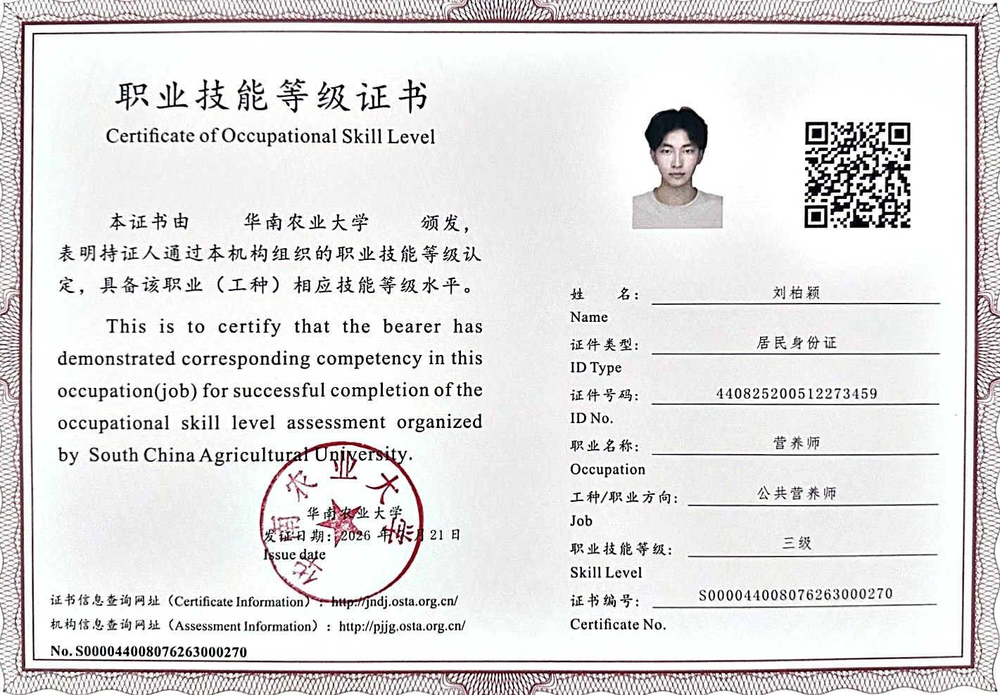

自学项目
公共营养师三级
刷题页
备考公共营养师三级时做的刷题工具：275 道理论题，顺序练习、随机练习、错题练习都有，学习记录可以导出备份、再导入恢复。自己备考在用，也分享给同学一起刷。
作品集 · 2026
食品营养与健康专业在读。我做内容运营，也用 AI 工具做产品——AIGC 短视频、刷题应用、个人信息管家，都是已经落地的东西。
内容运营 · AIGC 内容生产 · 食品安全 · 短视频剪辑 · AI 工作流 · 提示词工程 · 私域运营 · 数据分析
作品
五个做完了的东西。链接都在下面，点进去是真实跑着的版本，不是概念图。
自学项目
备考公共营养师三级时做的刷题工具：275 道理论题，顺序练习、随机练习、错题练习都有，学习记录可以导出备份、再导入恢复。自己备考在用，也分享给同学一起刷。
个人项目
自己搭的个人信息管家：想法、资料、待办随手记在一处，自动分类、打标签、在记录之间建立关联，能搜索、能提问，也能生成阶段总结，还开放了 REST 接口给外部脚本读写。现在演示的是一份深圳租车门店的运营记录（20 条、12 项待办），点开链接看到的分类、关联和逾期提示都是自动跑出来的。
AIGC 内容
一条讲清反式脂肪酸的科普短视频：哪些食物里有、配料表上怎么认、对身体有什么影响。用 GPT 与 Gemini 协作生图，AI TTS 配音，剪映完成剪辑和配乐。
59%
视频转发率
校园项目 · 2026 年 6 月
策划并剪辑校园短视频：把素材按视觉效果分级筛选，前 3 秒的 Hook 和剪辑节奏做成标准，再根据播放数据回流改第二版。成片实现爆款传播，转发率 59%，整套流程沉淀成了可复用的内容方法。
课程项目 · 2026 年 4 月
以比格披萨为对象做餐饮全链路分析：用 STP 定位目标客群、4P 拆产品组合与渗透定价，再建模分析自助取餐动线和翻台率，最后输出一份覆盖用户、成本、盈利的完整分析报告。
STP×4P
商业模型拆解
技能
四块能力，都有对应的作品或经历在上面。
01
把重复工作拆成自动化流程：门店运营里从零拆出 5 个高频场景，用 Dify、n8n 和提示词工程打包成可复用的 SOP，用户触达率从 62% 提到 95%，内容产出效率提升 4 倍。还懂 RAG，能把知识库和大模型串起来用。
02
用 AI 编程工具独立做完过两个上线项目：公共营养师刷题应用、个人作品集网站。能调大模型 API（GPT / Claude / DeepSeek）、处理 JSON、把工具链接起来。习惯把想法拆开自己动手搭，而不是停在对话框里。
03
AI 生图、运镜动画、TTS 配音、短视频剪辑，能从选题到成片独立走完全流程。剪映、CapCut、AI 绘画工具熟练，做过完整的视频内容输出。
04
食品营养与健康专业背景，持有国家公共营养师三级证书。在 SGS 理化检测实习中主导过实验步骤标准化，也有门店从 0 到 1 运营、活动落地的全程经验。
经历
负责样品前处理、流转与数据录入，全程零差错交付；主导实验步骤标准化、模块化流程清洗，把零散操作整理成可复用的步骤。
从 0 到 1 梳理门店运营的 5 个高频场景，用低代码和提示词工程搭了 3 条可复用的 AI 工作流并沉淀成 SOP；用户首触达率从 62% 提升到 95%，内容产出效率提升 4 倍；落地 4 场门店活动，单场引流 120+ 人次。
关于
食品营养与健康专业在读。比起把工具挂在嘴边，我更喜欢直接做出能用的东西：备考缺工具就自己做一个，门店流程乱就拆成 SOP。做完的东西会放在这个页面上，点开就能验证。
教育背景
主修食品营养学、食品安全与质量控制、食品分析与检验。持有国家公共营养师三级证书。

证书
食品营养与健康专业方向的职业资格证书，备考刷题页就是为它做的。